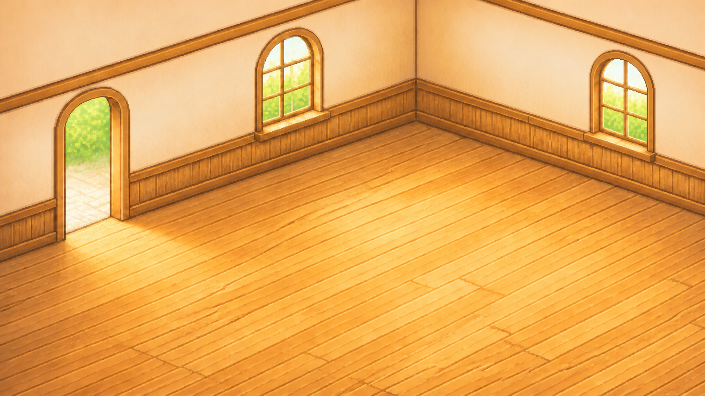
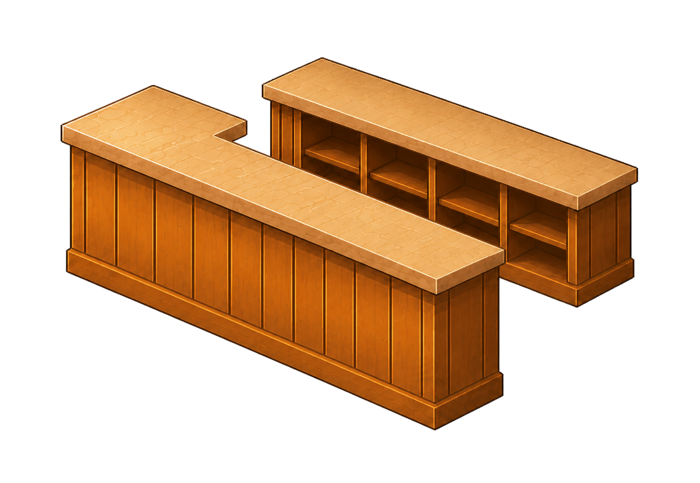
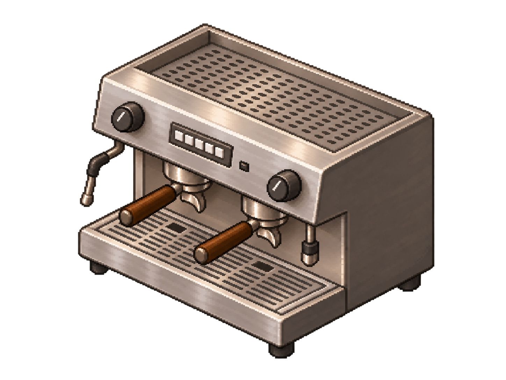
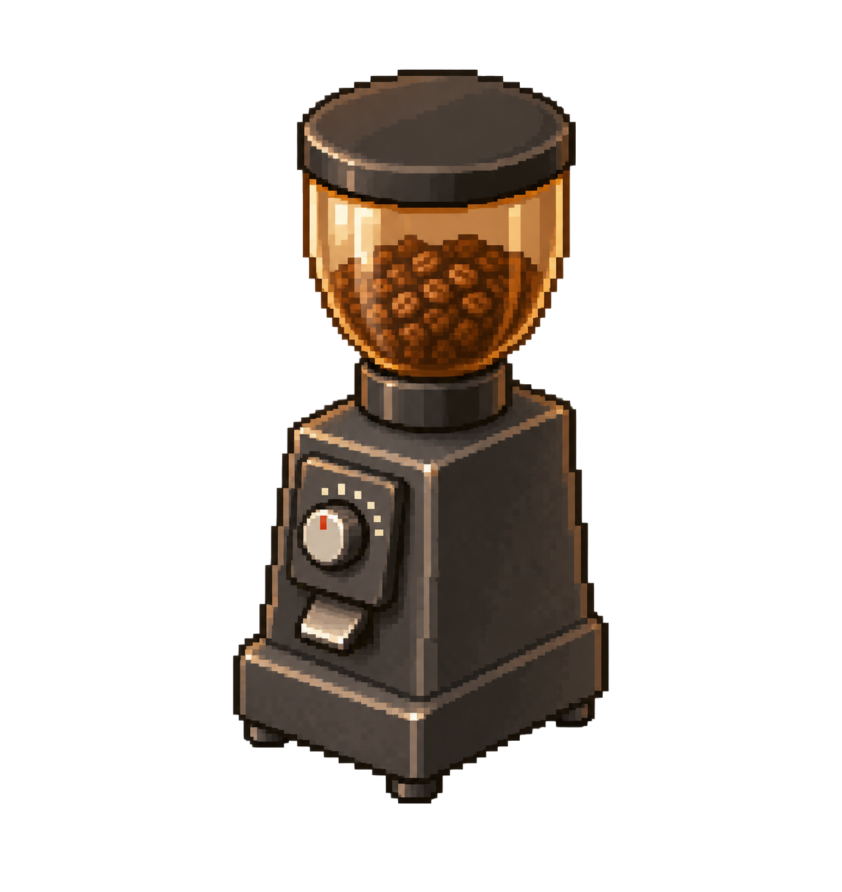
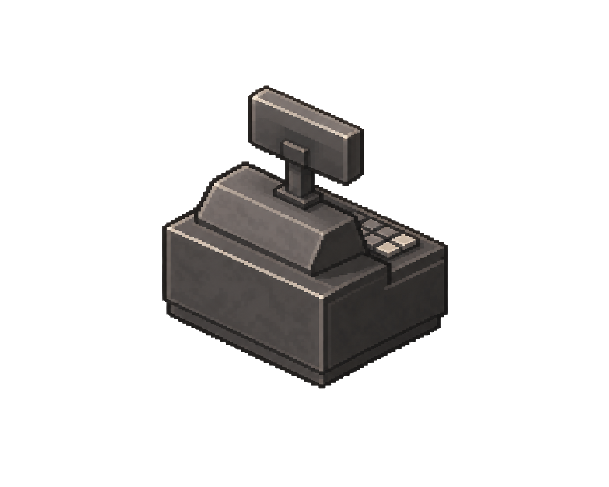
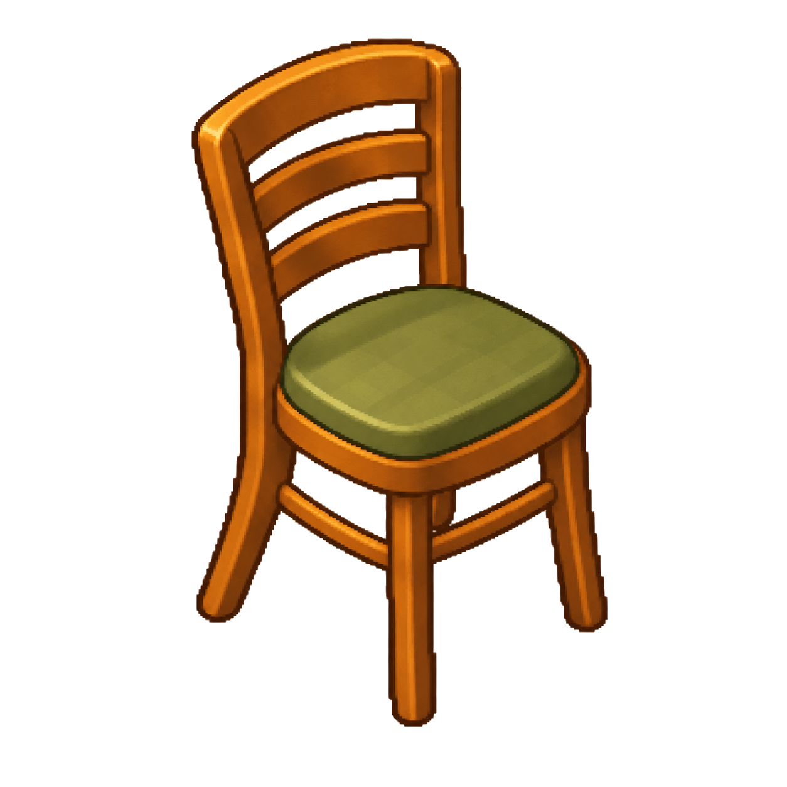
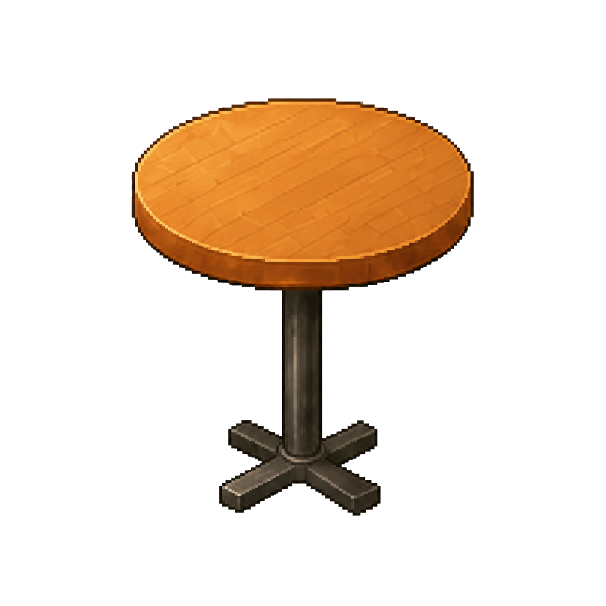
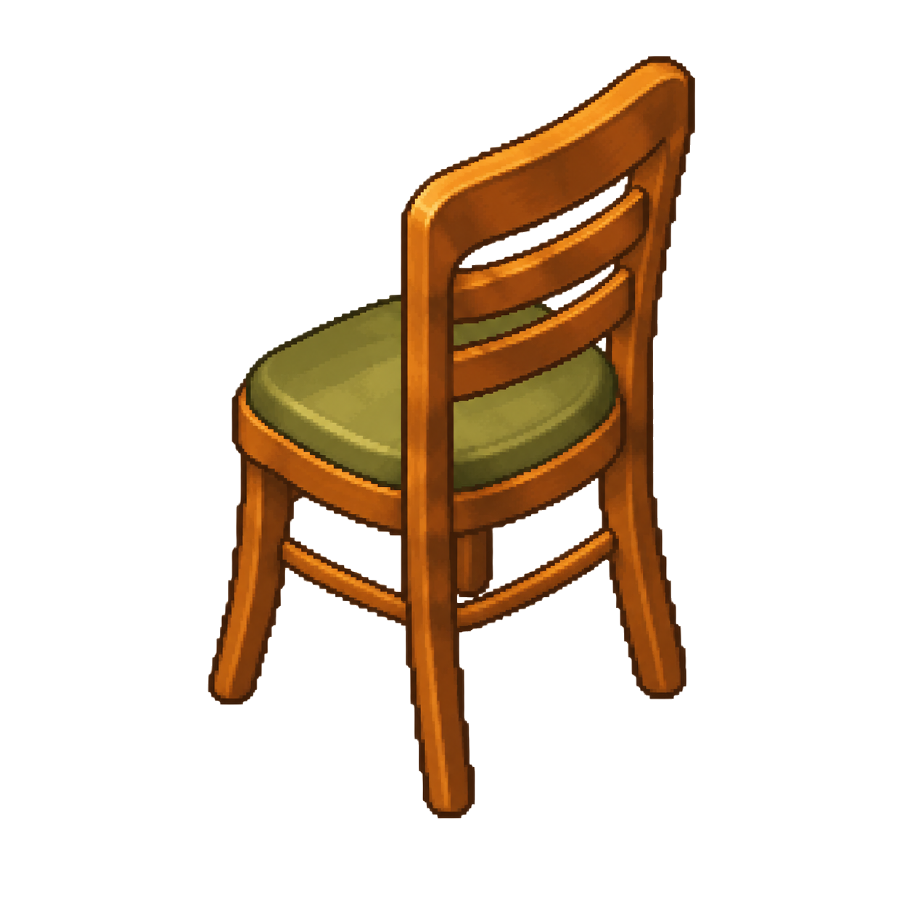
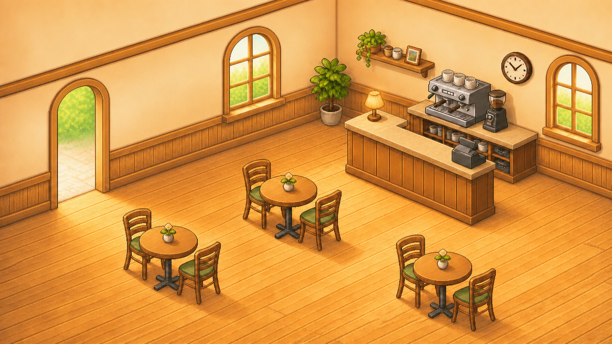

Freigegebener Stand + Kasse
Kaffeemühle abgenommen · neu: Kasse auf dem vorderen Tresen, Bedienseite zum Personalgang








Schritt 7 · nur KasseKasse zur Abnahme
Zielbild
Tag 1 v06 · Fenster und Bodenfehler bereinigt · zwei Uhrzeiger

EndzustandWird nicht automatisch ins Spiel übernommen